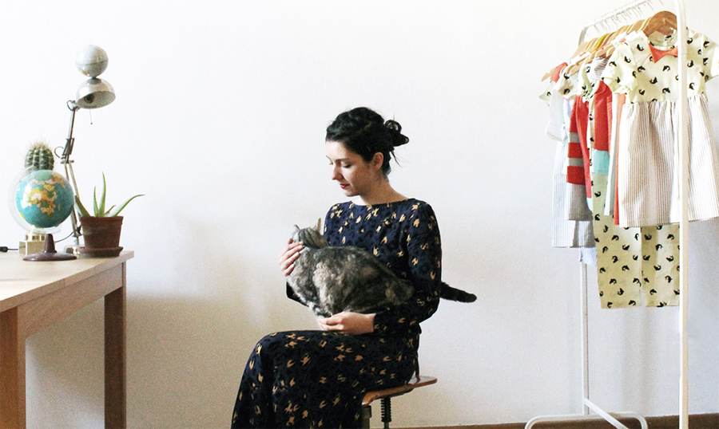
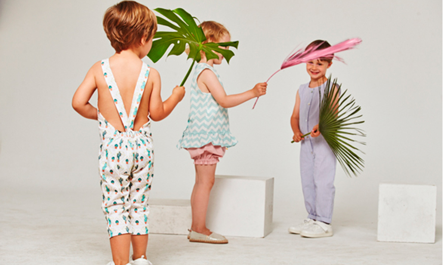
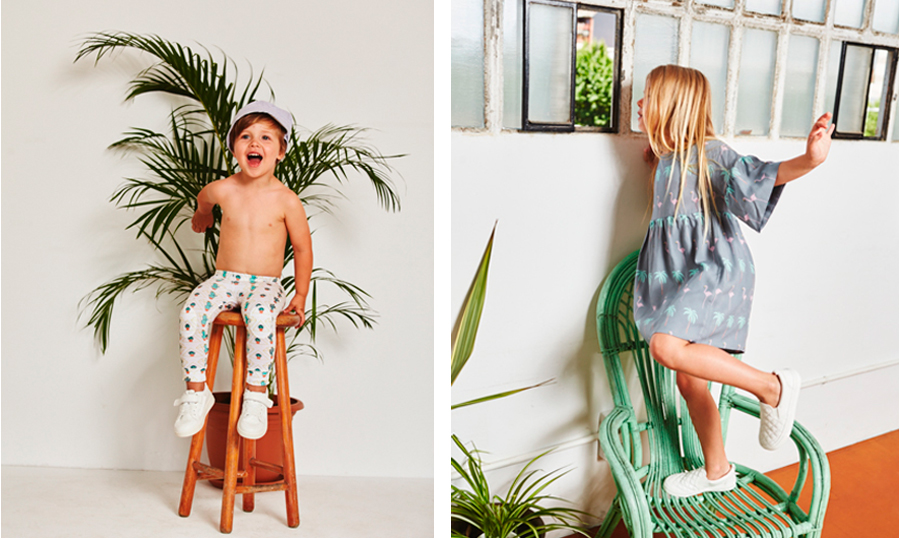
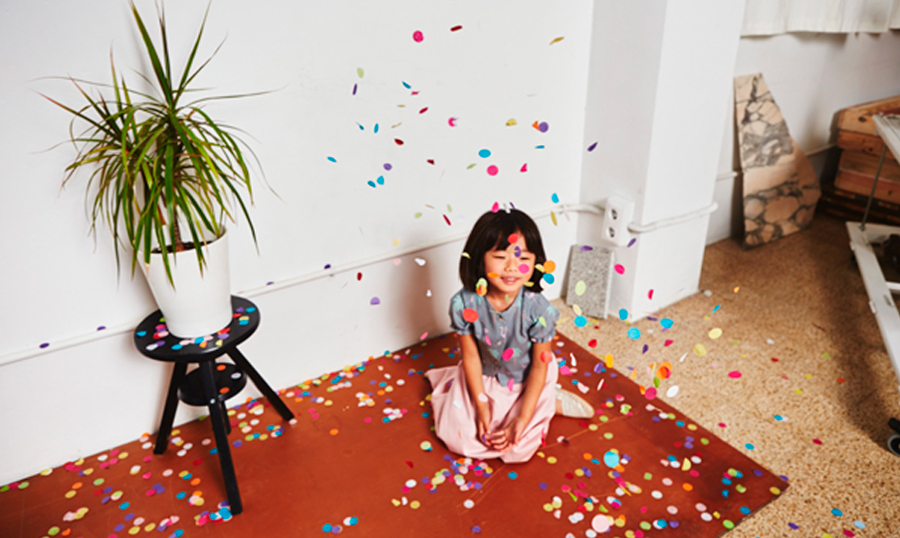
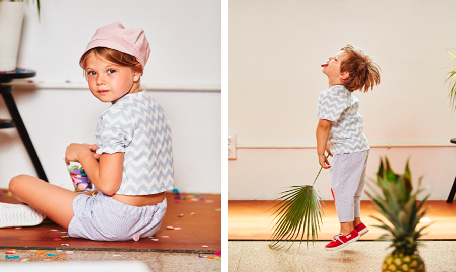
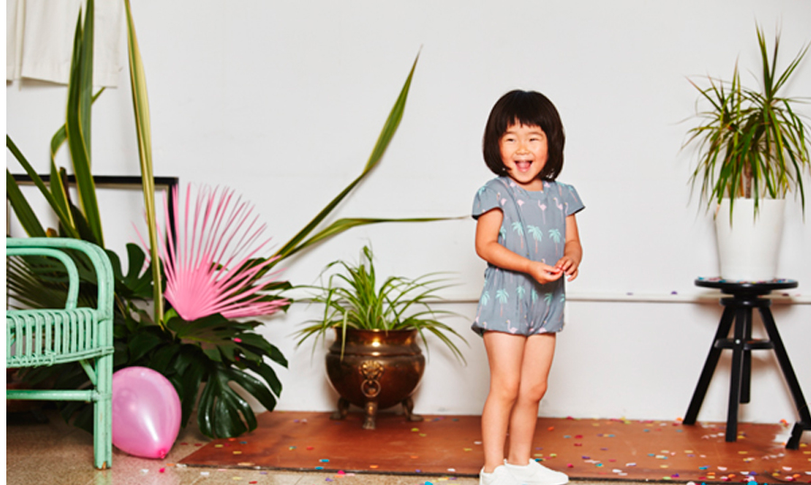

LFT meets “Les Petits Vagabonds”
In this week´s post, Little’s Fashion Therapy meets unique, bohemian, slow fashion brand, Les Petits Vagabonds, created by Turkish designer Duygu Massol. In the past, she worked as fashion editor and stylist in various magazines in Istanbul, which sharpened her eye for fashion. After that, she decided to start a new life and moved to Mediterranean city, Barcelona.
New dreams and new beginnings brought to life Les Petits Vagabonds.¬†The brand has made its entrance into children’s fashion, with limited edition and exclusive collections that stay away from mass production.
We meet Duygu in her lovely studio located in El Born, one of the trendiest areas of Barcelona, where she tells us all about her gorgeous brand. She is just as lovely and sweet as we expected her to be!
The interview

What made you decide to launch Les Petits Vagabonds?
I was living in Istanbul and working as a fashion stylist. Besides that, I was fashion editor of Marie Claire Magazine. In a big city like Istanbul, life goes very fast. You cannot even find time to think if you really like the point where you are, and what you want to do. Then, I fell in love in Barcelona where I came for vacation. üôÇ After a year we have decided to live here. I left everything behind and moved to Barcelona.
Kid´s fashion was always in my mind. I always enjoyed creating kid´s fashion stories for Marie Claire Kids in Istanbul. When I moved to Barcelona I had time to listen myself. I realised that I want to dream for little humans, not for the big ones.
How did you cope with starting a new brand in a foreign country?
It is very tricky, especially if you don’t speak the language. I think it depends on the¬†country, Spanish people are very open and helpful. Before I started, I did¬†a lot of research on the internet. I was lucky that I met the right people. At the very beginning I was speaking very basic Spanish, so I was communicating with the manufacturer by drawing, but they were very willing to help me. On the other hand Les Petits Vagabonds is an international brand¬†made in Barcelona. We attend international trade shows, and most of our clients are foreign.
How would you describe Les Petits Vagabonds kids?
I am not a fashion follower, I always believed to a good style. When I start to¬†dream about a collection, I dream about whose child will wear that collection. Children reflect their parents’ style, and people who have their own style can understand fine taste. Les Petits Vagabonds kid’s parents are such¬†people. That’s why a ‚Äúpetit vagabond‚Äù is a happy kid with a unique style; a dreamer, a¬†curious, not a fashion follower. He/she is different than his/her friends.
Where do you find the inspiration to design your collections?
My inspiration is in the street, in my mind, the way I live, what is happening in my life.
Where can shoppers find your brand?
In concept stores and kids apparel shops in USA, UK, Sweden, Belgium, Portugal, Spain, Italy, Greece, Turkey, Kuwait, Hong Kong and South Korea.
What´s the thing you like the most about your work?
The process of dreaming about a new collection. Color research, mood-board preparation, and pattern drawing.
Les Petits Vagabonds SS16 collection
This summer 2016, Les Petits Vagabonds embarks on a trip to lovely Venice Beach, California. Oh yeah!
“Another Day in Paradise,” as the collection has been named, is made to get you in a good mood. The campaign is a delight, surely the result of cute and gorgeous models, together with lovely clothes and exquisite styling work.
The collection takes inspiration from the sun-drenched magical land of California; its deserts, palm trees and beaches. A pastel colour palette brings to life easy-to-wear garments with a distinctive vintage touch, and delicate prints.





I hope you enjoyed this as much as we did. From now on, Little´s Fashion Therapy will have its eye on this gorgeous and cute brand! Make sure you visit their website to see the entire collection.
Click here to find out more lespetitsvagabonds.com
+ There are no comments
Add yours